Claude Code plugin
The Claude Code model router for every subagent
Model Router runs every agent Claude Code starts on the cheapest Claude model and effort that should do the job. When the work comes back for a redo, the same call runs one level higher.
/plugin install model-router --marketplace crisnahine/claude-code-model-router

What Model Router does
Model Router (model-router) is an open-source Claude Code plugin for autonomous multi-model orchestration. It sets the model and reasoning effort of every subagent, agent-team teammate and workflow stage as it starts, from any plugin, skill or agent, and you never pick a model by hand.
Routes every agent
Subagents, teammates and workflow stages get a model and effort as they start. The agent the caller chose stays the same.
Starts cheap
Lookups run on Haiku, everyday implementation on Sonnet at medium effort, and only the hardest work on Opus or Fable.
Climbs on a redo
A call Claude re-issues after its result came back runs one level higher: a stronger model, or more effort on the same one.
Respects your choices
A model you, a skill or an agent named wins. A cap sets the strongest model allowed, and your allowlists apply.
Checks hard answers
When a weak session model answered a hard request alone, Claude is asked once for a stronger agent's check.
Shows what it spent
/model-router:usage lists what ran where and what each turn cost at list price.
How it picks a subagent model
Each call's brief is scored for risk, scope, load and ambiguity and given one of five levels. The router then takes the cheapest usable model strong enough for that level, inside your cap and your settings (architecture).





Agent call fallback covers setups without mods.Does it reduce Claude Code cost?
On an Opus 5.5 session, the router with the test-run check off cost 21% less per solved task than Claude Code's defaults, at the same pass rate, on a pilot too small to call any class a win (benchmarks).

Every class row is PARTIAL. The router's defaults at commit a06e5d4 cost $0.124 against $0.156 on one run per task, inside the noise, and on a Sonnet session earlier builds cost more per solved task than the best baseline in seven of eight classes. The project claims "cheapest" only for a benchmark row marked PASS.
Install the Claude Code plugin
In Claude Code, run the one-step install. There is nothing to configure: routing is on from the first session.
/plugin install model-router --marketplace crisnahine/claude-code-model-routerOn versions without the one-step form, add the marketplace first:
/plugin marketplace add crisnahine/claude-code-model-router
/plugin install model-router@claude-code-model-routerRequirements: Claude Code 2.1.292 or later, sh, and Python 3.9 or later as python3 or python on your PATH. Without Python the plugin stays out of the way. Then try /model-router:route <task> to see which model a task would get and why.
Options
Every option is in /config under the plugin. Rules for single agents and extra models go in ~/.claude/model-router.json or a project's .claude/model-router.json.
| Option | Default | What it does |
|---|---|---|
routing_mode | auto | auto sets model and effort on every agent. advise only tells Claude the estimate. off does nothing but keep the ledger. |
priority | balanced | balanced, quality (one step stronger) or fast (one step lighter). |
max_tier | none | The strongest model subagents may run on. Anything stronger is lowered to it. |
agent_pins | respect | respect keeps the model an agent names for itself. override routes those agents by task too. |
main_effort | off | Raises the main conversation's effort for a complex or harder request, for that turn, where an effort change keeps the prompt cache. |
update_check | on | The daily check of the Claude Code changelog, docs index, model list and deprecations. |
verify_gate | off | Asks for a test run before a turn ends when code changed and nothing checked it. |
strong_agent_gate | on | Asks for a stronger agent's check before a turn ends when a weak session model answered a hard request alone. |
Questions about Model Router
The same answers as docs/FAQ.md.
What is Model Router?
Model Router is an open-source Claude Code plugin that sets the Claude model and reasoning effort of every agent Claude Code starts, and moves a call one level up when its work comes back for a redo. It covers subagents from any plugin, skill or agent, agent-team teammates and workflow stages. The agent the caller chose, its prompt and its tools stay as they were. It is MIT licensed and needs Claude Code 2.1.292 or later and Python 3.9 or later (README).
How does Model Router pick a model for a subagent?
Model Router reads the subagent's brief and the agent's name, gives the call one of five levels, and runs it on the cheapest usable model and effort for that level. The levels are lookup (Haiku at low effort), standard (Sonnet at medium), complex (Sonnet at high), hardest (Opus at high) and frontier (Fable at high). The brief is scored for risk, scope, load and ambiguity, and for whether the call changes something or only reads. A model you or the caller named still wins: the order is CLAUDE_CODE_SUBAGENT_MODEL_FORCE, a model named on the call, a per-agent rule, the agent's own model field, CLAUDE_CODE_SUBAGENT_MODEL, and only then the router's pick (ARCHITECTURE.md).
What happens when the cheap model gets it wrong?
When Claude issues the same call again in the same request after its result came back, that call runs one level higher. Lookup, complex and hardest move to a stronger model on a redo, standard moves to complex and stays on Sonnet at more effort, and a frontier redo runs at one more step of effort. Each redo is also a vote that the first level was too low: at least 6 votes that are also at least 30% of a level's calls raise that level for later calls (ARCHITECTURE.md).
What does Model Router cost?
The plugin is free under the MIT license, and it adds 728 tokens to each request's context, measured on a headless Haiku run. Each of its hooks takes about 54 to 60 ms warm on the measuring machine, and a spawn decision settled in about 110 ms in live runs, starting Python included (PERFORMANCE.md). The models it routes to are billed by your Claude plan or API account as usual. /model-router:usage shows what each turn cost at list price, main conversation and subagents apart.
Does Model Router reduce Claude Code cost?
On an Opus 5.5 session, the router with the test-run check off cost $0.123 per solved task against $0.156 for Claude Code's defaults, 21% less, with all 32 runs solved for both. That was 4 runs per task class, under the 10 the benchmark needs to call a class a win, so every class row is PARTIAL. The router's defaults at commit a06e5d4 cost $0.124 against $0.156 on one run per task, inside the noise. On a Sonnet session, earlier builds beat the best baseline on lookup only and cost more per solved task in the other seven classes (BENCHMARKS.md, TRACEABILITY.md row S4.15).
Does quality drop when subagents run on cheaper models?
In the benchmark so far the router solved as many tasks as Claude Code's defaults on an Opus 5.5 session: 32 of 32 for each, with the test-run check off. The run of the router's defaults at a06e5d4 solved 15 of 16, missing one design task. Two things guard quality: a redo runs one level higher, and the strong_agent_gate check, on by default, asks once for a stronger agent's review when a hard request was answered by a weaker session model alone. The profile is an estimate from the brief's wording, so Claude can overrule it on any call (BENCHMARKS.md, README).
How do I turn Model Router off, or turn parts of it off?
Set the plugin's routing_mode option to off in /config, and the router changes nothing and only keeps its ledger. advise tells Claude the estimate without changing any call. The other parts each have their own option: strong_agent_gate (on) and verify_gate (off) for the checks before a turn ends, main_effort (off) for the main conversation's effort, and update_check (on) for the daily fetch. To leave one agent alone, give it "route": false under agents in ~/.claude/model-router.json or the project's .claude/model-router.json (README).
Can I cap the strongest model, or force one model?
Yes: max_tier caps the strongest model subagents may run on, and CLAUDE_CODE_SUBAGENT_MODEL_FORCE pins every subagent to one model. With the cap set to sonnet, for example, anything the router or a caller picks above Sonnet is lowered to it. With the force variable set, the router only sets effort. A pinned strong model costs far more on small jobs: in a live test, listing a directory on a forced Opus subagent cost about 30 times what the same subagent cost on Haiku ($0.39 against $0.012) (README).
How is this different from setting one model for every agent?
Setting CLAUDE_CODE_SUBAGENT_MODEL gives every agent without its own model the same model, while Model Router gives each call the model and effort its brief needs. One model for everything either puts lookups on a strong, expensive model or puts hard design work on a weak one. The variable also outranks the router's pick: while it is set, agents that name no model run on it and the router leaves them alone, unless agent_pins is override. Leave it unset to let the router choose (ARCHITECTURE.md).
Does it change the main conversation's model?
No, Model Router never switches the main conversation's model, because each model keeps its own prompt cache and a switch would re-read the whole conversation uncached. With the main_effort option on (it is off by default), it raises the main conversation's effort for one turn when a request looks complex or harder, and it never lowers what you set. When a request looks harder than the session's model, Claude is told to hand the hard thinking to a strong subagent (README).
Does Model Router work on Amazon Bedrock, Google Vertex AI and Microsoft Foundry?
Yes, routing works on third-party providers through the aliases haiku, sonnet, opus and fable, which Claude Code resolves for your provider. Some providers resolve an alias to an older model, so on those the mod starts routed work on the family's newest model (claude-opus-5-5, claude-sonnet-5-5 or claude-haiku-5-5) and falls back to the alias if the provider refuses it. Setting ANTHROPIC_DEFAULT_<FAMILY>_MODEL keeps the alias. The main conversation's effort is left alone on Bedrock, Vertex and Foundry, where an effort change would re-read the context uncached (README).
What does Model Router store on my machine, and what leaves it?
Model Router keeps its state in its own plugin data directory and sends no prompt, brief, path or code anywhere. The ledger keeps the first 120 characters of each agent call's description, plus levels, reasons, model names, token counts and list-price cost; briefs and prompts themselves are not stored, and a repeated call is recognized by a hash. The only network traffic is the daily update check: the Claude Code changelog, docs index and model pages from code.claude.com and platform.claude.com, and your account's model list from api.anthropic.com when an Anthropic API key is set. Turning update_check off stops that fetch (SECURITY.md).
Does it work with other plugins, skills and agents?
Yes, Model Router routes agents from any plugin, skill or agent, and it never changes which agent runs or refuses a call to steer it. Another plugin's hook that denies or asks about a call still applies. An agent whose definition names its own model keeps it unless you set agent_pins to override (README).
Does it approve tool calls or get around my permissions?
No, the plugin never approves a tool call, and your permission rules and auto mode review every spawn as they would without it. The one thing it refuses is on the fallback path: a call it already rewrote that came back without running, when the call's own model is above your cap. The refusal names the model to use instead (SECURITY.md).
How do I see what it routed and what it spent?
Run /model-router:usage for what ran where and what it cost at list price, and /model-router:models for the models in use, what each runs as, and what is capped, unavailable or learned. /model-router:route <task> explains which model a task would get and why before you run it. Both usage and models take --json for scripts (README).